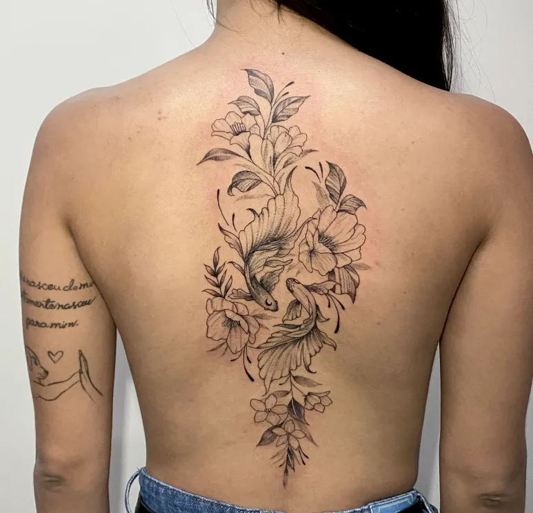
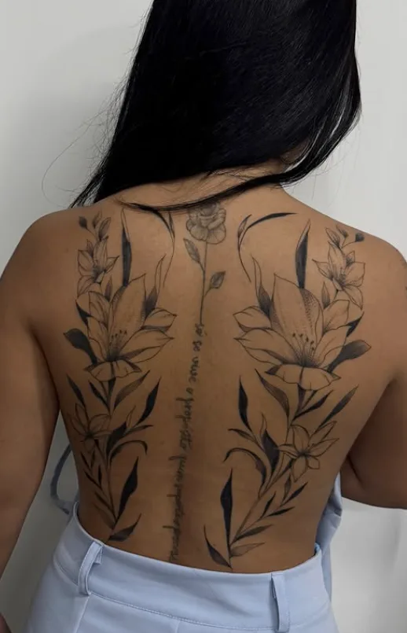
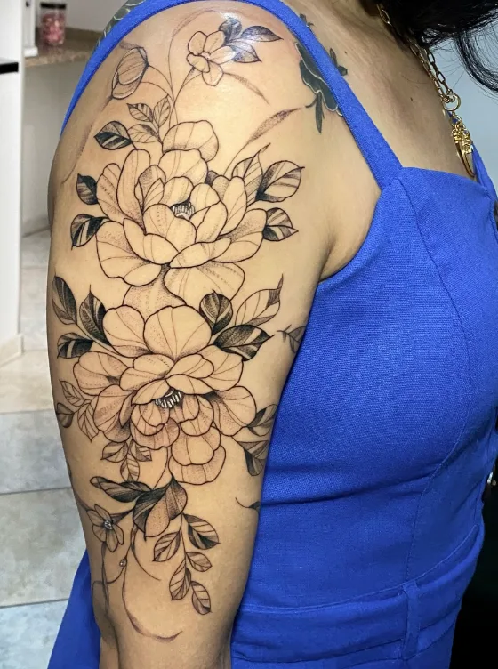
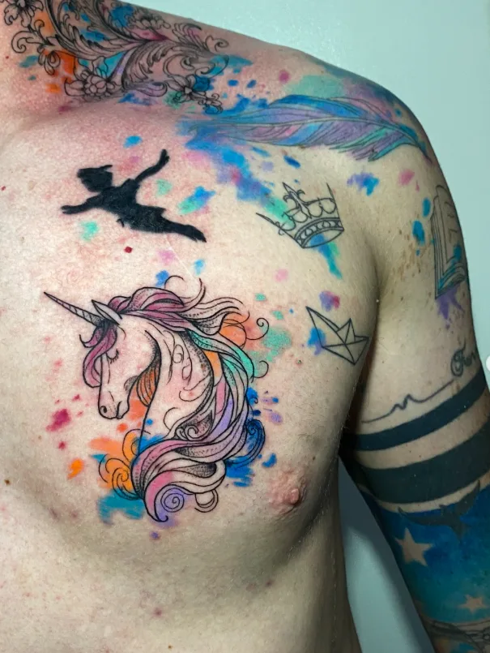
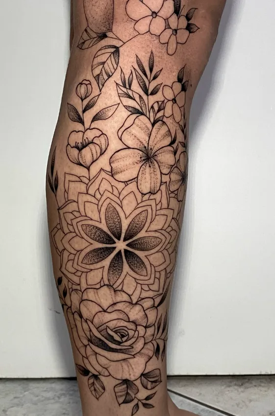
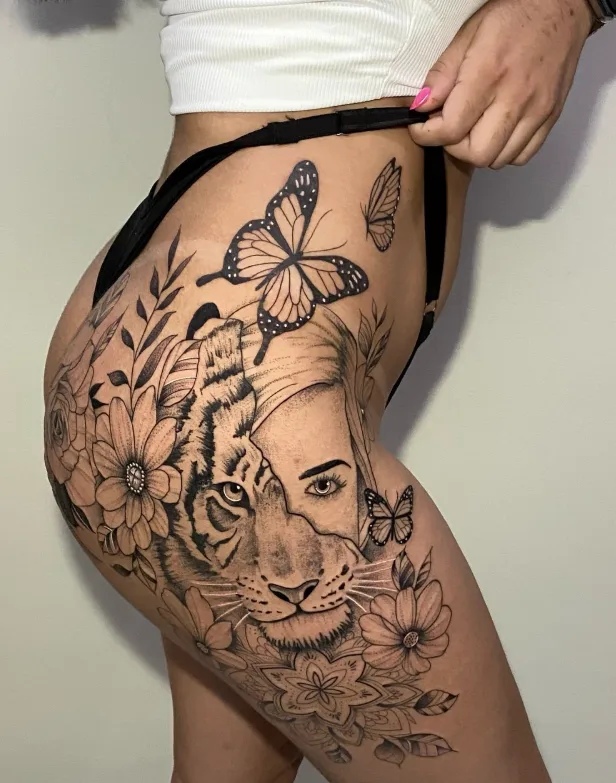
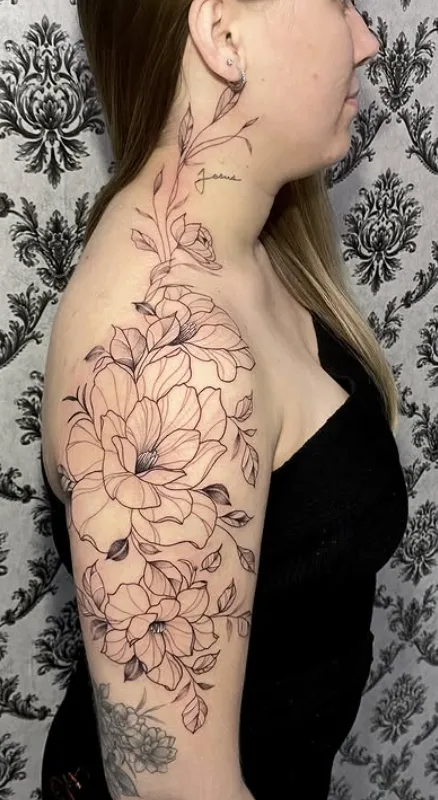
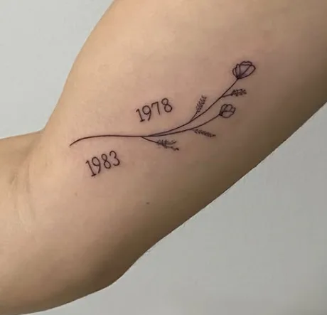
Tatuagens e piercings profissionais em Lençóis Paulista.
Designs exclusivos, higiene impecável e uma experiência inesquecível.
Fran é tatuadora em Lençóis Paulista a mais de 5 anos, reconhecida pelo seu atendimento cuidadoso, pelo capricho em cada detalhe e por proporcionar uma experiência tranquila desde o primeiro contato.
Cada trabalho é desenvolvido com atenção às ideias, ao estilo e à personalidade de cada cliente. Seja em uma tatuagem ou na colocação de um piercing, Fran busca oferecer um serviço de extrema qualidade para todos, e também te orienta cada etapa do procedimento corretamente sobre os cuidados necessários.
O estúdio conta com um ambiente acolhedor, limpo e organizado, onde cada cliente pode se sentir confortável e seguro para realizar seu projeto.








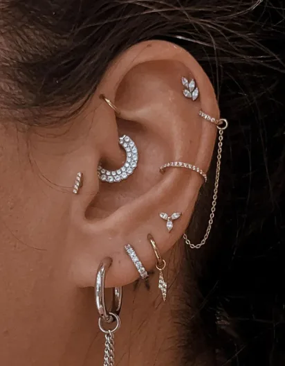
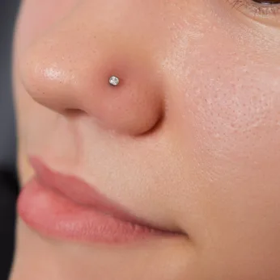
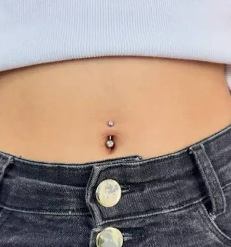
Novos trabalhos nesta categoria em breve — fale conosco no WhatsApp para ver mais exemplos.
Excelente profissional, muito atenciosa e cuidadosa! Entrega um trabalho maravilhoso — eu e meu marido já temos nossa tatuadora favorita.
Pontualidade, limpeza, qualidade, profissionalismo e ótimo valor — recomendo!
Pontualidade, limpeza, qualidade, profissionalismo e ótimo valor.
Melhor tatuadora de Lençóis Paulista e região!!!
Foi uma experiência maravilhosa, é muito delicada, as tatuagens superaram todas as minhas expectativas. Simplesmente perfeita!
Lugar acolhedor e lindo, com extremo profissionalismo. Tatuadora maravilhosa, super requisitada e eficiente, com equipamentos de primeira. Atendimento nota 10, recomendo!
Melhor lugar para fazer sua tatuagem e piercing também! Atendimento maravilhoso, elas são super atenciosas.
Cada detalhe do nosso espaço foi pensado para oferecer segurança, conforto e uma experiência à altura da arte que você está prestes a levar para a vida.
*Horário sujeito a confirmação — favor validar antes da publicação.